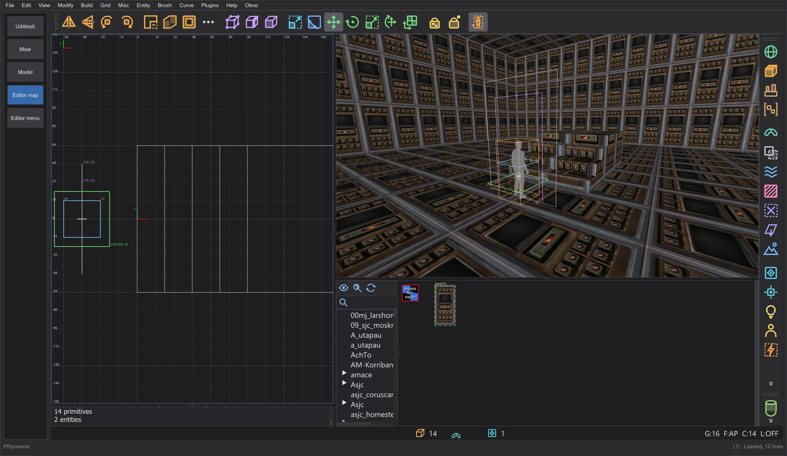
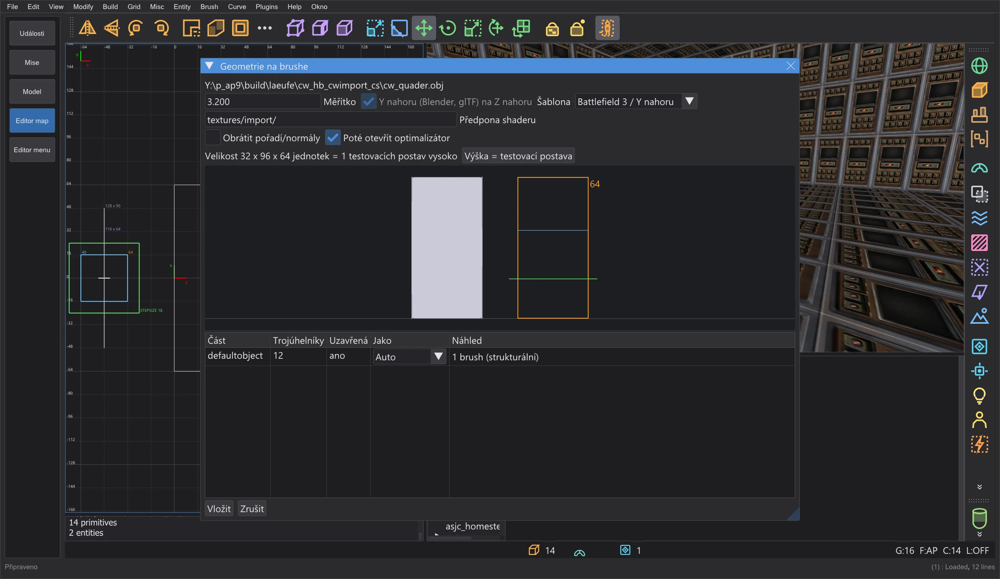
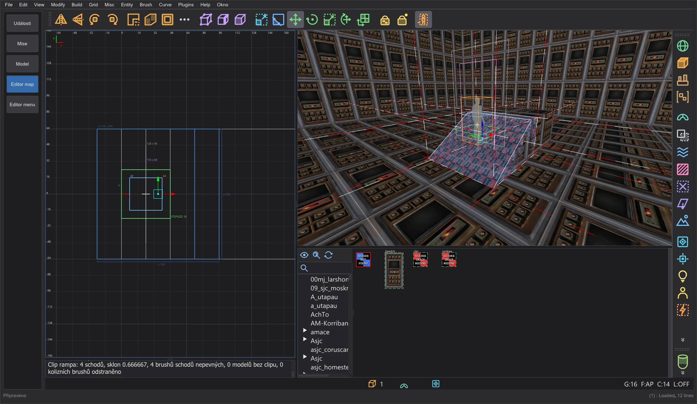

Editor map: testovací postava, měřítko a clip nástroje
Nástroje z požadavků módu Clone Wars: postava hráče ve skutečné velikosti, import modelů se správným měřítkem a osami, změna měřítka místností s poznámkou v mapě, hladká kolize pro schody a stěny. Vše je ve výchozím stavu vypnuté nebo působí jen při vyvolání.
Testovací postava#
View > Testovací postava > Zobrazit testovací postavu (F7 nebo tlačítko na konci panelu nástrojů) zobrazí hráče ve skutečné velikosti ve 2D pohledech a v kameře: kvádr, kterým engine pohybuje (32 x 32 x 64 v single playeru a Movie Duels, 30 široký v multiplayeru; počátek ve výšce boků, chodidla 24 pod ním; přikrčená postava má horní hranu ve 16 místo 40 - OpenJK g_client.cpp a bg_public.h), značku STEPSIZE 18 nad chodidly, druhou výšku a rámy minimálních rozměrů dveří a chodby z optimalizátoru. V kameře v něm stojí model hráče ze hry v póze, jakou hra ukazuje, když hráč stojí (přikrčená postava v podrženém posledním snímku animace přikrčení).

Shift+F7 postaví postavu pod ukazatel myši: ve 2D pohledu na obě osy pohledu (hloubka zůstane), v kameře chodidly na plochu. Pravé kliknutí v pohledu nabídne Testovací postava sem, pravé kliknutí na tlačítko panelu celou nabídku. Ve výchozím stavu vypnuto; volby se pamatují.
Import s měřítkem a osami#
Dialog Soubor > Importovat geometrii má Šablona: Výchozí (jako dosud) čte soubor přesně jako dosud (výchozí), Battlefield 3 / Y nahoru převede Y nahoru na Z nahoru jako (x, -z, y), Battlefront 2 / Z nahoru ponechá osy, Source / GMod (x 0,889) je ponechá a změní měřítko o 64 / 72 (hráč je v Source SDK 2013 vysoký 72 jednotek, zde 64), Vlastní osy dovolí zvolit osu souboru pro X, Y a Z. Obrátit pořadí/normály je pro modely, jejichž trojúhelníky běží opačně (Empire at War). Dialog ukáže velikost v jednotkách a v testovacích postavách, Výška = testovací postava změní model postavy na 64 a pohled zepředu ukáže model vedle testovací postavy. Šablona se pamatuje; platí i při přetažení souboru na pohled.

Clip nástroje a vrstva Collision#
Modify > Nástroje Clone Wars (také nahoře v nabídce pravého kliknutí v pohledu, když je něco vybráno) pracuje s výběrem, vždy jeden krok zpět:
- Schody na clip rampu: vyberte schody z brushů nebo misc_model. Hladká rampa z textures/system/clip (hráč a NPC; střely dál zasahují schody) vede přes přední hrany schodů, od spodku schodiště po nejvyšší stupeň. Viditelné schody ztratí kolizi tak, jak to chápe q3map2: jedna skrytá strana (caulk, jinak spodní) se změní na nepevnou system/nodraw a jediná nepevná strana udělá celý brush průchozím; model ztratí své clip spawnflagy; čistě kolizní brushe výběru se odstraní. Po sestavení q3map2 jde hráč nahoru bez skoků po schodech; kontrola vzhledu proti kolizi v optimalizátoru tam nic nehlásí. Rampa strmější, než se dá chodit (MIN_WALK_NORMAL 0,7), dostane varování.
- Hladká clip stěna (rovina) / Hladká clip stěna (obal): vyberte nepravidelnou stěnu (brushe, patche nebo misc_model). Rovina položí podél stěny clip kvádr, jehož přední strana leží v nejvíce vystupujícím bodě na straně kamery; obal použije konvexní obal výběru.
- Změnit měřítko místnosti: změní měřítko výběru (místnosti) o faktor kolem středu výběru dole; bodové entity se posunou s ním, modely si ponechají velikost. Entita info_notnull v tom bodě dostane cw_scale (a cw_room) a .map řádek komentáře "// cw_scale ..." - jen data, hra i q3map2 obojí přeskočí. Změnit měřítko a uložit jako díl pak uloží místnost i se značkou jako samostatný díl (Soubor > Uložit výběr).
- Vrstva Collision: clip brushe těchto nástrojů - a z "Model + clip" s profilem kontrol Řetězec Clone Wars - jdou do vlastní vrstvy jménem Collision. Vznikne teprve, když se některý z nich použije; Zobrazit vrstvu Collision ve stejné nabídce (nebo prohlížeč vrstev) ji zobrazí a skryje.
